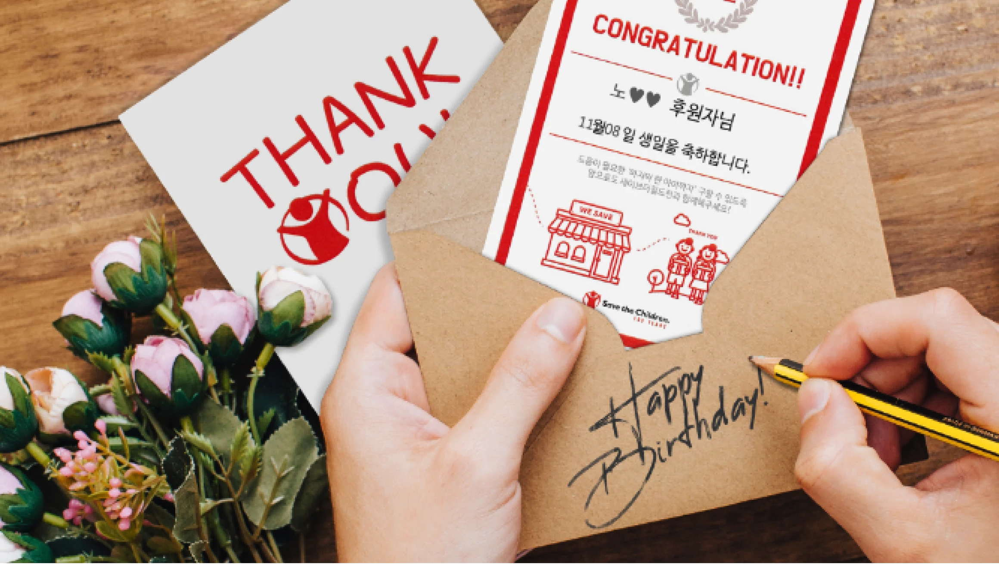
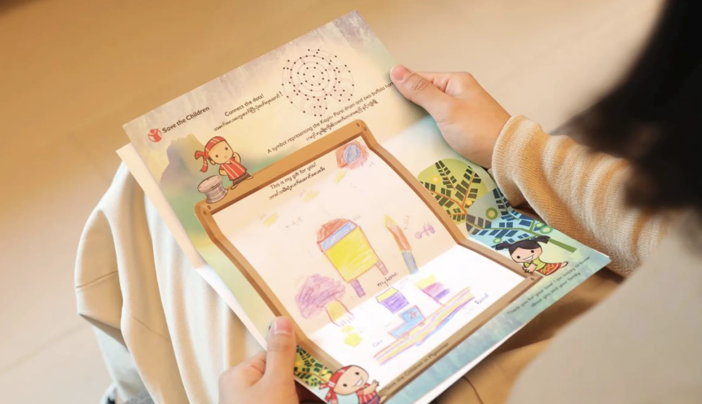

아이리움안과는 ‘세이브더칠드런’과 함께
소중한 직원의 생일에 케이크 대신 나눔을 선물하고 있습니다.
매달 생일을 맞이한 아이리움안과 직원분의 이름으로
도움이 필요한 아이들에게 소중한 나눔을 이어가며
뜻깊은 생일을 기념하고 있습니다.

아이리움안과는 ‘세이브더칠드런’과 함께
소중한 직원의 생일에 케이크 대신 나눔을 선물하고 있습니다.
매달 생일을 맞이한 아이리움안과 직원분의 이름으로
도움이 필요한 아이들에게 소중한 나눔을 이어가며
뜻깊은 생일을 기념하고 있습니다.

세이브더칠드런은 1919년 아동이 미약한 ‘보호의 대상’이 아닌
‘주체적인 인격체’로 존중받아야 한다는 믿음으로 설립되어,
아동의 생전, 보호, 발달, 참여의 권리를 실현하기 위해
인종, 종교 정치적 이념을 초월하여
전 세계 약 117개 국가에서 활동하는
국제구호개발 NGO입니다.
아이리움의 따뜻한 생일파티가
위기에 몰린 세상 아이들의 작은 도움이 되길 바랍니다.
아이리움안과 전 직원 생일날은 기부의 날입니다.